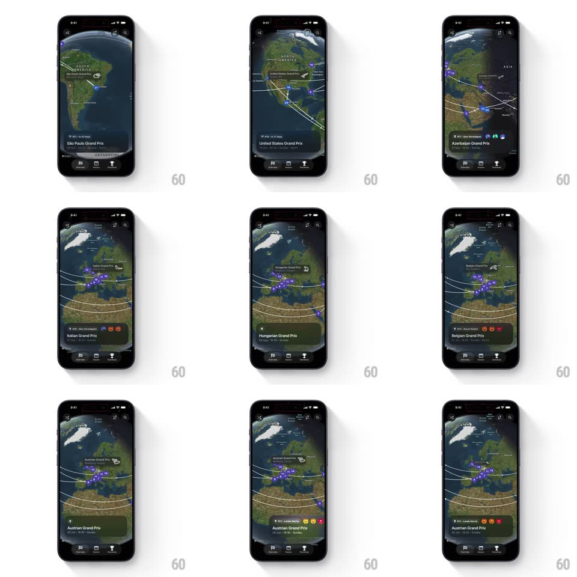

Media
Frame-by-frame

Rebuild this interaction 1:1: Lights Out's globe swipe - swiping the bottom race card horizontally rotates the 3D globe to center the next Grand Prix pin (Qatar, Sao Paulo, United States, Azerbaijan, Dutch, Hungarian, British, Austrian, Canadian) with a slight zoom and spring settle.

Rebuild this interaction 1:1: Lights Out's globe swipe - swiping the bottom race card horizontally rotates the 3D globe to center the next Grand Prix pin (Qatar, Sao Paulo, United States, Azerbaijan, Dutch, Hungarian, British, Austrian, Canadian) with a slight zoom and spring settle. ## Integration Integration: stack-agnostic spec - springs given as stiffness/damping, timed motions as duration + curve; map every value to your framework and animation library of choice. ## Scene Dark screen: a 3D Earth globe filling the upper area, purple race pins with white arc lines tracing the season's travel between them, and a bottom card with round number, race name, date range, and flag emoji. Standard tab bar at the very bottom. ## Motion spec Pattern: card-swipe globe rotation, gesture-driven. - Swipe: the card tracks the drag 1:1; the globe rotates proportionally in the same direction (1px drag ~ 0.15deg longitude). - Release: the card snaps to the nearest race (spring ~300/22) while the globe eases to center that race's pin (spring ~220/18), zooming from 1x to 1.3x mid-travel and back. - Content: the card's race name, round, date, and flag crossfade with a 12px slide (250ms) as the snap passes the midpoint. - Arcs: the white route arcs redraw to highlight the leg ending at the selected race (300ms draw). ## Calibration - Globe rotation direction follows the card - swipe left, globe turns left. - The selected pin centers and scales up (1 -> 1.4); other pins stay static size. ## Reduced motion Tapping the card edges advances the race; the globe tweens rotation (400ms) without drag tracking. ## Don't miss - The zoom pulse mid-rotation sells the travel - do not rotate at constant scale. - The arcs are the season's route; they persist and re-highlight, not vanish, per race.